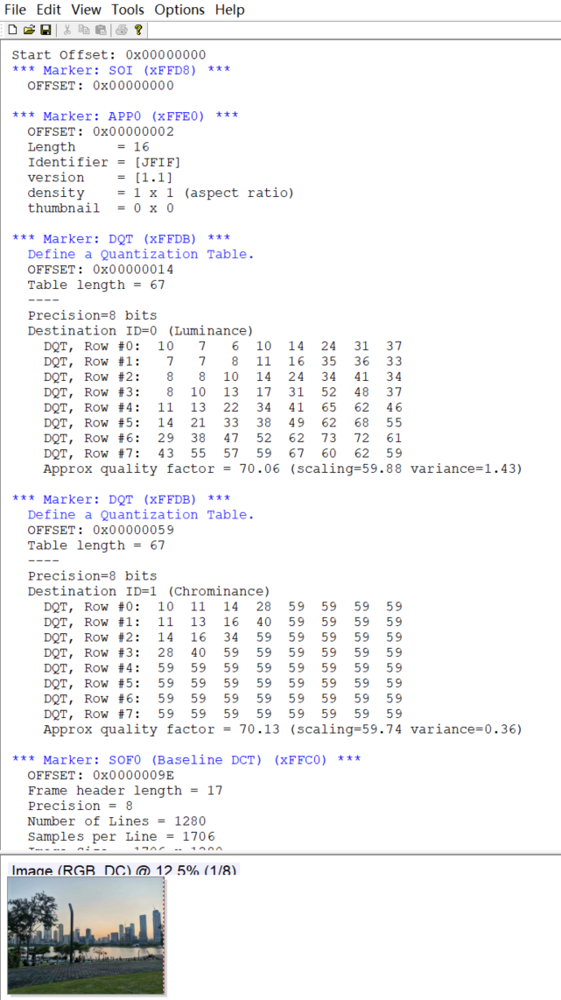

5 工具推荐
JPEGsnoop 是一个非常优秀的 JPEG 图像解码和分析工具。它能分析图像所有元数据，甚至可以帮助识别图像是否已被编辑。
特征：
- 解码 JPEG、AVI (MJPG)、PSD 图像
- MCU 分析及详细解码
- 提取嵌入的 JPEG 图像
- 通过压缩特征分析检测编辑过的图像
- 报告所有图像元数据 (EXIF)
- 批处理文件
- 压缩签名检测
- 恢复损坏的 JPEG 图像数据
- 无需安装
界面如下图所示：

更多关于 JPEGsnoop 工具的使用方法，这里不做过多介绍。另外，需要说明的是 JPEGsnoop 经常被用来检测 JPEG 图片是否被篡改过（或者 PS 过）。